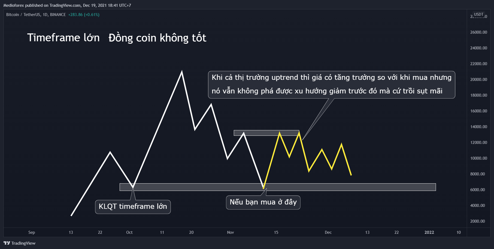
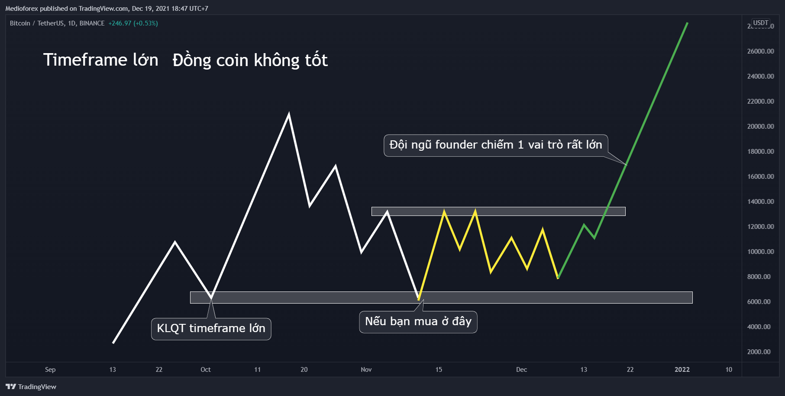

#49. Đầu tư Crypto "HOÀN HẢO" từ A đến Z
Chào mọi người, bài hôm nay là bài chia sẻ kinh nghiệm của mình về đầu tư Tiền mã hóa Cryptocurrency từ A - Z.
Trong bài này mình sẽ cố gắng viết thật đầy đủ và chi tiết nhất có thể để anh em nào mới sẽ có cái nhìn bao quát, tránh gặp phải những cạm bẫy cũng như tránh đi vào những vết xe đổ của mình. Mỗi vết xe đều phải trả giá bằng tiền nên càng tránh được nhiều thì càng đỡ mất nhiều tiền.
 Bài viết này mình muốn mọi thứ liền mạnh để ai cũng có thể theo dõi kể cả nhưng bạn mới, mình cũng sẽ tiện để cập nhật thêm sau này. Vì vậy mình sẽ không chia nhỏ các phần như mọi khi nên sẽ rất dài, mọi người chịu khó kéo chút nhé.
Bài viết này mình muốn mọi thứ liền mạnh để ai cũng có thể theo dõi kể cả nhưng bạn mới, mình cũng sẽ tiện để cập nhật thêm sau này. Vì vậy mình sẽ không chia nhỏ các phần như mọi khi nên sẽ rất dài, mọi người chịu khó kéo chút nhé.
Hi vọng qua bài này, 4,5 năm sau thì chất lượng cuộc sống của tất cả chúng ta sẽ cùng nhảy lên 1 mức mới.
BẮT ĐẦU NHÉ
Trong đầu tư coin thì mình kết hợp 3 kỹ năng sau:
- Phân tích kỹ thuật.
- Phân tích cơ bản.
- Quản lý vốn
Trong đó:
-
Phân tích cơ bản là kỹ thuật dùng để tìm và chọn được đồng coin tiềm năng, có tương lai phát triển, khả năng sinh lời tốt để mà lựa chọn xuống tiền đầu tư, ngoài ra còn là phân tích về dòng tiền, xu hướng của thị trường ( không qua biểu đồ)
-
Phân tích kỹ thuật là kỹ thuật dùng để khi tìm điểm mua và điểm bán hợp lý khi đã lựa chọn được đồng coin tiềm năng.
-
Cuối cùng, quản lý vốn là cái quan trọng nhất. Nó giúp chúng ta tồn tại, sống sót trên thị trường tài chính khắc nghiệt khi chúng ta sai.
Giờ thì cùng mình đi vào chi tiết hơn ở từng phần nha!
I. Phân tích cơ bản
Hãy nói về phân tích cơ bản trước vì đây là thứ mình ít nói đến nhất trong hội quán nhưng nó là 1 phần khá quan trọng.
 Nếu anh em là nhà đầu tư theo hướng ngại tìm hiểu công nghệ, ăn chắc mặc bền, không thích phức tạp, nhìn chung là chỉ muốn đầu tư vào thị trường crypto vì nó là tương lai, có khả năng tăng trưởng tốt thì cứ đầu tư vào Bitcoin và bỏ qua luôn yếu tố phân tích cơ bản này đi cho nhẹ đầu cũng được.
Nếu anh em là nhà đầu tư theo hướng ngại tìm hiểu công nghệ, ăn chắc mặc bền, không thích phức tạp, nhìn chung là chỉ muốn đầu tư vào thị trường crypto vì nó là tương lai, có khả năng tăng trưởng tốt thì cứ đầu tư vào Bitcoin và bỏ qua luôn yếu tố phân tích cơ bản này đi cho nhẹ đầu cũng được.
Còn nếu anh em là nhà đầu tư xác định thị trường crypto là nơi đầu tư nghiêm túc, đồng hành cùng nó lâu dài thì hãy nghiêm túc đọc tìm hiểu nó như cách nhà đầu tư bất động sản đọc tìm hiểu các dự án, nhà đầu tư chứng khoán theo dõi, đọc và nghiên cứu báo cáo tài chính. Mình tin đây là thị trường rất tiềm năng, xứng đáng để bạn phải bỏ thời gian ra tìm hiểu nó.
Ok vậy giờ xác định tìm hiểu nghiêm túc thị trường tiền mã hóa rồi thì bước đầu tiên phải bắt đầu từ đâu?
1. Đầu tiên với người chưa biết
Nếu bạn là người chưa biết gì thì trước hết hãy tìm hiểu cơ chế hoạt động của blockchain, cách thức nó vận hành để hiểu nó có thể giải quyết vấn đề gì, bài toán gì trong cuộc sống. Ở trên youtube có những video giải thích rất dễ hiểu và trực quan, bạn có thể tìm xem.
Có 1 vài video mình tìm được khá hay bạn có thể tham khảo (Tất cả đều có phụ đề Tiếng Việt, bạn chỉnh lại trước khi xem nhé)

How the blockchain is changing money and business | Don Tapscott

How does a blockchain work - Simply Explained
Mục đích tìm hiểu cái này không phải là để hiểu quá sâu vì với đại bộ phận thì để hiểu sâu thì nó khá khó, mục đích là để hiểu bản chất cốt lõi của những thứ gọi là tiền mã hóa, tiền điện tử. Từ đó có cái nhìn đúng đắn, hiểu được nó thì mới tạo được niềm tin, có niềm tin thì mới có thể xuống tiền đầu tư như cách chúng ta xuống nhiều tiền mua BĐS hay mua vàng vậy. Còn không hiểu, không có niềm tin thì đầu tư vào tiền mã hóa nó chỉ nằm ở mức giống như “chơi” thôi. “Chơi” theo kiểu dân ta hay nói là chơi chứng khoán, chơi forex, chơi coin. Chứ riêng BĐS và vàng thì toàn nói đầu tư BĐS, đầu tư vàng.
Tóm lại ở bước chưa biết gì hãy tìm hiểu từ những thứ cốt lõi trước để có được niềm tin thì mới có thể nghiêm túc đồng hành, đầu tư trên thị trường này. Đây là điều rất rất quan trọng nên bạn đừng xem thường nó, phải có lòng tin vào thị trường thì bạn mới có thể vượt qua những đợt bão, đợt FUD được.
2. Với người đã biết
Nếu bạn là người đã biết, muốn bắt đầu tìm hiểu nghiêm túc với thị trường này thì bước tiếp theo hãy đọc, đọc thật nhiều. Ban đầu sẽ hơi ngộp thông tin và thuật ngữ nhưng bắt đầu cái học cái gì cũng vậy à.
- Đọc từ nội dung cơ bản dành cho người mới, cách mua bán tiền điện tử, các sàn, các thuật ngữ.
- Đọc tiếp đến các hệ sinh thái.
- Đọc xong hệ sinh thái thì đọc các ứng dụng trong hệ sinh thái (dApp)
2.1. Hệ sinh thái trong Crypto rất quan trọng.
Nếu so sánh hệ sinh thái trong Crypto với những thứ mà ai cũng biết thì có thể so sánh nó tương tự như các hệ sinh thái của Apple, của Samsung.
Hệ sinh thái của Apple. Mỗi sản phẩm là 1 mảnh ghép trong hệ sinh thái
Để mà ví von thì trên thế giới có rất nhiều các công ty công nghệ, các tập đoàn công nghệ và mỗi tập đoàn đều cố tạo ra được 1 hệ sinh thái của riêng của mình, nhưng trong tất cả thì hệ sinh thái của Apple và Samsung là nổi tiếng, lớn mạnh và đông đảo người dùng nhất. Và ở trong coin cũng tương tự kiểu vậy. Vì thế hãy đọc, nghiên cứu và tìm hiểu nó đầu tiên trước đã nhé.
2.2. Các ứng dụng trong hệ sinh thái
Tìm hiểu xong các hệ sinh thái thì tìm hiểu về các ứng dụng trong mỗi hệ sinh thái. Cái này người ta, báo chí hay gọi là các xu hướng, các xu hướng này có thể chỉ là xu hướng ngắn hạn rồi biến mất trong tương lai nhưng cũng có thể xu hướng đó sẽ tạo ra tương lai mới hoặc thay đổi vĩnh viễn tương lai của 1 số ngành nghề hiện tại. Các ứng dụng tốt nhất thường hay được ứng dụng đầu tiên ở những hệ sinh thái mạnh. Hãy đọc, nghiên cứu và tự đưa ra được đánh giá sáng suốt nhé.
Và để dễ hình dung cho các bạn mới chưa biết thì mình có thể so sánh nó với những thứ mà mọi người đều biết. Đó là “xu hướng” bỏ cổng jack tai nghe 3.5 song hành cùng làm tai nghe không dây true wireless thay cho tai nghe có dây mà các hãng công nghệ đua nhau ngày trước và hiện tại vẫn vậy. Nó đã làm thay đổi ngành công nghiệp tai nghe và cách mọi người sử dụng tai nghe có dây trước đây. Và những công ty thiết kế tai nghe không dây đều phải làm theo hướng tương thích với những hệ sinh thái mạnh đầu tiên như iOS hay Android.
Và đây là hình ảnh những Coin, Token của từng mảng trong hệ sinh thái Ethereum
Đó là những cái chính và còn nhiều kiến thức khác nữa. Rất hay ho thú vị cho những ai thích khám phá.
3. Vậy thì những điều đó đọc ở đâu?
Ban đầu mình giới thiệu đọc ở https://coin98.net/ 25. Ở Việt Nam thì mình đánh giá đây là 1 trong những trang web viết chi tiết, bố cục thiết kế web phân mục rõ ràng dễ theo dõi, dễ tìm hiểu với người mới. Và bạn cũng có thể xem thêm ở những trang web khác cũng như trên Toutube.
Mọi người lưu ý rằng coin98.net này là Coin98 Insights ( kênh thông tin chia sẻ) còn coin98.com là Ví và cổng chuyển đổi các đồng coin. Mình nói đọc thông tin ở coin98.net không có nghĩa là khuyên bạn nền dùng ví Coin98 hay mua đồng C98. Vì bản thân mình đã từng dùng thử nhưng nền tảng của C98 còn rất nhiều hạn chế.
Nhưng có 1 lưu ý mình muốn cảnh báo trước. Đó là khi đọc những bài viết trên websites hay là xem những video trên Youtube đánh giá tiềm năng dự án thì khi đọc xong, xem xong, người mới bắt đầu tìm hiểu sẽ đều cảm thấy mọi dự án đều tiềm năng, dự án nào cũng có thể đầu tư được.
Đây là 1 trong những điểm rất nguy hiểm cho người mới. Nó không khác gì bạn đi mua đất mà chỉ nghe môi giới BĐS nói về tiềm năng khu đất, các dự án sắp được triển khai trên khu vực, nó quá là màu hồng và đó là điều không tốt 1 chút nào.
Vì thế khi đọc và xem video các bài đánh giá đồng coin, token này kia. Thì người ta nói tiềm năng phát triển có hay thế nào thì cứ tạm để đó, đừng fomo. Xem đánh giá là để hiểu sứ mệnh của đồng coin đó là gì, đồng coin đó giải quyết được vấn đề gì, cách dự án của đồng coin đó đang vận hành để mà tự so sánh với các đồng coin khác rồi đưa được ra đánh giá của mình vì ở trên một website hoặc 1 kênh youtube có thể đã review, nói cả mấy chục dự án và dĩ nhiên là chỉ số ít trong số đó là có tương lai. Do đó muốn đầu tư đúng thì hãy chăm đọc và ngồi nghiên cứu lọc dự án. Cứ đọc đã đời, đọc 1 vòng để biết tổng quan thị trường đang như nào mới ngồi chọn coin rồi nghiên cứu kỹ hơn đồng coin đó xem nó có thực sự có tương lai hay không.
Mình thì không giới thiệu bất kì 1 dự án nào nhưng mình có 1 vài kinh nghiệm nhỏ nhoi, có kinh nghiệm mình phải đổi bằng 1 đống tiền ngu mà mình muốn chia sẻ, mong nó sẽ giúp mọi người tìm, lọc và chọn được đồng coin tiềm năng.
3.1. Kinh nghiệm 1: Chưa biết thì nên chọn phương án an toàn
Nếu chưa có nhiều kinh nghiệm, muốn đầu tư an toàn thì ngoài Bitcoin ra, hãy chọn những đồng coin nền tảng lớn, đồng coin mà đã có hệ sinh thái lớn mạnh như ETH, BNB…
3.2. Kinh nghiệm 2: Top là tốt
Nếu đầu tư theo lĩnh vực thì nên chọn coin top ở lĩnh vực bạn muốn đầu tư.
Có nghĩa là: Như hồi trước bạn muốn đầu tư coin sàn thì chọn coin của sàn top. Muốn đầu tư Defi thì cũng chọn top, muốn đầu tư gamefi thì cũng chọn top… Tuy nói là vậy nhưng không phải đầu tư coin top luôn là tốt nhất, nó vẫn có rủi ro nhưng ít nhất nó giảm thiểu nguy cơ đi nhiều.
Đây cũng là 1 trong những bài học xương máu mất tiền của mình hồi trước, hồi mà mình mới tập tành đầu tư coin.
Khi đó thị trường bấy giờ cũng có những xu thế của nó. Mình quyết định chọn đầu tư theo 1 trend bấy giờ. Nhưng thay vì chọn đồng coin đang có vốn hóa tốt nhất, cộng đồng tốt nhất, hoạt động ổn định nhất ở cái xu hướng đó thì mình lại chọn đồng coin top dưới, cùi bắp hơn nhiều. Lý do mình chọn như vậy là do mình thấy đồng coin top trong xu hướng kia đã có vốn hóa thị trường lớn rồi, nên mình đánh giá khả năng tăng trưởng x nhiều lần tài khoản không cao. Chọn đồng coin top dưới trong xu hướng đó có vốn hóa nhỏ, khả năng cho x nhiều lần tài khoản cao hơn nên mình mới chọn lựa như vậy.
Và đó là 1 đại sai lầm từ tư duy lệch lạc của mình lúc bấy giờ. Viên ngọc quý tuy đã có giá trị cao nhưng càng ngày càng sáng, càng tăng giá trị. Còn rác có giá trị thấp nhưng càng ngày càng thúi càng giảm giá trị.
Apple vốn hóa cao ngất ngưởng đứng đầu thị trường chứng khoán như vậy nhưng vốn hóa ngày càng tăng, năm 2020 tăng 80% giá trị vốn hóa. Bitcoin vốn hóa cũng đứng đầu thị trường tiền số nhưng vẫn tăng trưởng đến 2000% so với đáy của đợt downtrend trước, ETH đứng thứ 2 cũng tăng khiếp đảm, còn mấy đồng coin rác mà ngày xưa mình mua đã cắt lỗ thì giờ nhìn lại, nó vẫn chưa phá được KLQT của xu hướng giảm và đang lạc trôi ở chân trời nào đó, vậy nên không phải cứ thị trường uptrend là mọi đồng coin sẽ đều uptrend nhé.
Câu này đúng ra phải là:
Thị trường uptrend thì coin tốt đều uptrend
Tất nhiên nếu tìm được ngọc trong rác thì phần thưởng nhận được vô cùng hậu hĩnh. Có điều nó khó, việc đó là để dành khi bạn đã có kinh nghiệm, đã giỏi hơn, còn khi mới tìm hiểu, ít kinh nghiệm thì nên chọn coin top trong xu hướng mà bạn muốn đầu tư. Nhớ là vẫn phải đánh giá đồng coin top đó 1 cách cẩn thận như mọi đồng coin khác thì mới đầu tư chứ không nên chỉ vì nó là top trong xu hướng đó mà đầu tư ngay.
Thị trường tiền điện tử giờ đã lớn hơn nhiều so với năm bùng nổ 2017 nhưng nó vẫn còn bé tí ti, tiềm năng phát triển còn rất lớn. Vì thế đừng quá quan tâm vốn hóa đồng coin bạn chọn đã lớn nên nó không x được nhiều, mà hãy chỉ quan tâm đồng coin đó có thực sự tốt hay không, tương lai nó sẽ như nào. Nếu nó tốt, có tiềm năng thì lưu lại đợi giá đẹp rồi “múc”.
Fun : Đừng anh em nào thấy Tether - USDT cũng đứng Top mà đầu tư nhé 
3.3. Kinh nghiệm 3: Cẩn thận những dự án coin được tạo ra tại Việt Nam
Trong quá trình tìm hiểu của bạn thân thì mình thường ít khi đầu tư những dự án coin được tạo ra tại Việt Nam.
Nói điều này thì có thể bài này lại đầy gạch đá, và mình có thể bị ăn chửi là không yêu nước, không ủng hộ hàng Việt. Nhưng khi đầu tư thì nhà đầu tư chỉ tính lợi nhuận, thua lỗ, rủi ro chứ không có tình cảm nam nữ, tình yêu nước vào trong này.
Mua hàng tiêu dùng Việt nếu kém thì ít bạn còn được sử dụng món hàng đó, tuy không quá tốt bằng những mặt hàng khác. Nhưng nếu đầu tư sai dự án thì bạn có thể bay màu luôn một số tiền rất lớn mà không sử dụng được gì.
Và đây là những lý do tại sao mình ít khi đầu tư dự án coin được tạo ra tại Việt Nam:
Thứ nhất: Nó đến từ đội ngũ Founder.
Mình không nói đến yếu tố kỹ thuật trong lập trình vì đây không phải là cái làm khó người Việt, mình biết nhiều người Việt rất giỏi. Mình muốn nói đến yếu tố quản trị và tư duy tài chính. Đây là cái mà chúng ta khá yếu.
Chưa nói đến việc tính toán trong khâu phát triển đồng coin: khi sinh ra, khi sử dụng giúp nó giữ và tăng được giá trị theo thời gian cho nhà đầu tư (cái này xem ở roadmap) mà ngay cả khi dự án còn nhỏ thì chưa gặp nhiều vấn đề trong quản trị, nhưng khi lớn hơn chút thì bộc lộ yếu kém trong khâu quản lý, vận hành, tài chính.
Đây là thứ mình nhận ra không chỉ ở trong coin mà ở nhiều lĩnh vực khác nữa. Đó là còn chưa nói đến việc đồng coin đó phát triển hơn thì Founder nhiều khả năng bán dự án, bán bớt coin để lấy tiền (cái này người ta hay gọi là chốt non) khiến giảm tỉ lệ nắm giữ coin phần nào đó giảm động lực phát triển dự án.
Nên rất nhiều các dự án ở Việt Nam trong tình trạng đầu voi đuôi chuột. Ra mắt thì hoành tráng bùng nổ nhưng cứ hẹo dần rồi biến mất.
Đấy là mình nói đến những dự án có tiềm năng thật sự. Còn rất rất nhiều những dự án theo kiểu clone, scam rất nhiều tại Việt Nam. Ngay cả khi mình làm MMO hay Marketing trước đây, thay vì phát triển theo chiều sâu thì họ lại phát triển theo chiều rộng đến khi nào thị trường “nát” thì thôi.
Đặc biệt là với trend game Play to Earn bây giờ thì bạn sẽ thấy cả tá dự án được clone ra mà không mang lại nhiều giá trị.
Thứ hai: Nó đến từ đại đa số cộng đồng Việt Nam
Đây là lý do chính mình ít khi chọn các đồng coin dự án sinh ra tại Việt Nam
Các đồng Coin được tạo ra tại Việt Nam thì thường cộng đồng của đồng coin đó chủ yếu toàn là người Việt và ít khi có cộng đồng nước ngoài nên khả năng đồng coin đó đi ra biển lớn để tăng trưởng cũng sẽ ít hơn, yếu tố cộng đồng là yếu tố rất quan trọng mà mình luôn xem xét.
Thêm nữa mọi người cũng biết là số lượng người Việt có tư duy đầu tư nắm giữ không cao. Khi bắt đầu có trend thì dòng tiền chủ yếu đến từ lượng người mới fomo vào. Mà dòng tiền từ lượng người mới fomo là dòng tiền với tư duy ngắn hạn, tư duy lướt sóng. Mua là để chờ ra mắt rồi xả, xả sập sàn luôn không người khác xả mất.
Chơi kiểu đó thì dự án nào mà sống cho nổi. Mình mà là Founder thì mình cũng tự mất động lực để phát triển luôn.
Và đó là lý do cứ dự án được tạo ra ở Việt Nam thì mình thường ít khi đầu tư. Nhưng dự án của người Việt được tạo ra ở nước ngoài, hoặc có Advisor là người nước ngoài thì vẫn ổn nhé vì cách họ quản trị cũng khác, nghiêm túc với việc quản lý tài chính hơn. Thêm nữa cộng đồng đã được quốc tế hóa nên khả năng nắm giữ, hold coin tốt hơn vì thế khả năng tăng trưởng dự án cũng cao hơn.
3.4. Kinh nghiệm 4: Tokenomics là một yếu tố cực kỳ quan trọng
Không như Bitcoin hay các đồng coin được tạo ra theo cách đào hay có số lượng cố định để chống lạm phát. Những đồng Crypto sau này hầu hết đều là dạng Token nên không cần đào theo kiểu Proof Of Work như trước đây. Nên khái niệm Tokenomics ra đời.
Tokenomics là thuật ngữ được ghép từ hai từ Token (Tiền mã hóa) và Economics (Kinh tế học) . Chính vì thế, Tokenomics có thể xem là nền kinh tế của tiền mã hóa, cách chúng được xây dựng và áp dụng vào mô hình hoạt động của dự án đó.
Để giải thích và phân tích chi tiết về Tokenomics thì sẽ rất dài nên bạn có thể xem thêm bài viết rất chi tiết về Tokenomics tại: Tokenomics Là Gì? Ván Bài Lật Ngửa Với Nhà Tạo Lập Thị Trường 26
Ngoài yếu tố tiềm năng của dự án thì Tokenomics là yếu tố cực kỳ quan trọng mà bạn cần phải phân tích vì nó ảnh hưởng trực tiếp đến việc tăng giá, giảm giá của đồng coin trong tương lai.
Một đồng coin có tiềm năng đến mấy cũng không thể tăng giá trong tương lai nếu được sinh ra ồ ạt không có kiểm soát dẫn đến lạm phát. Hay đội ngũ phát triển cũng không có động lực làm nếu họ không có “đủ” lợi ích trong đó,… Ngoài ra đó còn thể hiện yếu tố công bằng, phi tập trung cần có của một dự án Blockchain nữa.
Tóm lại mọi dự án, đội ngũ, tiềm năng phát triển sẽ đều phải có yếu tố kinh tế nên Tokenomics là yếu tố cực kỳ quan trọng. Dù là nhà nước, công ty, gia đình, cá nhân… thì chúng ta đều có các yếu tố ảnh hưởng như thu nhập, dòng tiền, chi tiêu, tiết kiệm,… thể hiện có thể phát triển bền vững được hay không?
3.5. Kinh nghiệm 5: Đội ngũ đứng sau chính là “bộ não” của đồng coin đó
Đội ngũ tạo ra đồng coin là điểm cộng rất rất lớn đến sự phát triển của đồng coin đó
Đây là yếu tố ảnh hưởng rất lớn đến mình khi đưa ra quyết định lựa chọn. Một đội ngũ founder có tên tuổi, có uy tín, có nhiều dự án thành công trước đó thì luôn chiếm được lòng tin của nhiều người. Chưa nói đến việc họ uy tín thì tỉ lệ thành công cao hơn mà ngay cả việc có uy tín thì đã chiếm được lòng tin của nhiều người, do đó cộng đồng ủng hộ ban đầu đã cao hơn rồi.
Tất nhiên ban đầu mới tìm hiểu, bạn sẽ không biết đâu là người có tiếng, có uy tín trên thị trường, nhưng cứ đọc 1 thời gian là tự khắc biết à. Giống như việc, có đầy người còn không biết thủ tướng, chủ tịch nước Việt Nam hiện tại là ai nữa cơ. Không tin thì bạn cứ thử hỏi mấy bạn gái bạn quen mà không bao giờ xem thời sự tin tức và quan tâm chính trị xem.
Chưa tìm hiểu thì chưa biết, đó là điều hết sức bình thường, còn khi đã tìm hiểu thì việc biết ai đó có tiếng, có uy tín trên cộng đồng để thêm niềm tin trong việc chọn lựa dự án là điều không khó.
3.6. Kinh nghiệm 6: Cộng đồng của đồng coin
Đồng coin có cộng đồng đông đảo cũng là 1 điểm cộng lớn.
Cái này thì quá rõ rồi.
Bạn có thể tìm và xem 1 đồng coin có cộng đồng đông không thông qua những nền tảng mạng xã hội của đồng coin đó như Twitter, Reddit, Medium, Telegram,… Số lượng sub hay follow chỉ là một phần vì sẽ nhiều bên họ mua sub hay follow, tương tác ảo nên bạn có thể xem kỹ hơn ở các tương tác, comment,…
Những vấn đề liên quan đến cộng đồng thì do trước đây mình làm Digital Marketing nên cũng có ưu thế hơn về phân tích các yếu tố khác như Website, Traffic,…
Chẳng hạn như 1 dự án game Play to Earn mình có thể phân tích thêm và traffic chính từ nguồn nào Google, Facebook,… hay traffic đến từ đâu để biết đối tượng dự án nhắm đến đang là những ai, có tiềm năng không?
Ngoài ra bạn có thể xem tần suất các dự án đăng bài, cập nhật tiến độ trên các MXH, họ có chăm phát triển cộng đồng không? Vì một dự án tốt cũng cần một đội ngũ truyền thông tốt để nhiều người biết đến hơn thì mới có thể cất cánh được.
3.7. Kinh nghiệm 7: Dòng tiền và xu hướng của thị trường
- Dòng tiền trên thị trường Crypto sẽ có sự chuyển theo các chu kỳ khác nhau, đương nhiên sẽ không thể chính xác hoàn toàn nhưng theo kinh nghiệm của mình thường sẽ là: Bitcoin → Các altcoin lớn trong top 10 → Các altcoin top 100 → đến các đồng tiny top xa hơn,…
Khi thị trường đang ở đáy thì vốn sẽ đổ vào BTC vì nó là an toàn nhất, giá lúc này cũng rất tốt. Sau đó, giá BTC sẽ được kéo lên để kéo và thị trường cũng tăng trưởng theo. Nhưng khi BTC đã tăng đến 1 mức nào đấy, nhiều người mới thấy giá BTC cao rồi, tăng trưởng cũng khó nên sẽ chuyển dịch sang các đồng altcoin top thấp hơn để có lợi nhuận cao,… Tương tự với các đồng top dưới. - Ngoài ra, những ai thấy các đồng lớn đã tăng tưởng rồi sẽ có xu hướng đi tìm các đồng tương tự nhưng vốn hóa nhỏ hơn đề kỳ vọng có lợi nhuận cao hơn. Chẳng hạn như ETH tăng cao rồi sẽ tìm các hệ sinh thái khác như ADA, Solana, BNB, Fantom,…, Uniswap tăng cao rồi sẽ tìm đến các sàn DEX ( sàn phi tập trung) ở các hệ sinh thái khác như: Pancakeswap, Serum, Spookyswap,…
Tuy nhiên bạn cũng phải thật cẩn thận với cách luân chuyển theo xu hướng dòng tiền này vì nếu bạn tham mà tìm các dự án quá nhỏ với hy vọng x10, x20 thì rủi ro sẽ rất cao, vì dự án còn quá nhỏ để đánh giá. Thậm chí, dự án chưa kịp up thì thị trường đã đi vào downtrend rồi. Mà khi đã vào downtrend thì những dự án to có sự kiểm chứng rồi thì đội ngũ sẽ vẫn tiếp tục phát triển. Nhưng các dự án nhỏ thì không biết sẽ “lạc trôi” về đâu.
Tổng kết
Một dự án tốt sẽ là tổng hòa của rất nhiều các yếu tố, ở trên chỉ là một số kinh nghiệm khi đánh giá của mình. Bạn chỉ có thể cân đối sự cân bằng của các yếu tố chứ rất khó để có dự án tốt tất cả theo hướng chi li, vì nếu tất cả mọi thứ tốt hơn thì nó đang “to the moon” mất rồi.
Như mình đã nói trước đây, bạn không cần thiết phải quá đi sâu vào phân tích cơ bản mới có thể có lợi nhuận. Việc đơn giản nhất là lựa chọn những “coin top” vì đó là những dự án đã được cộng đồng “phân tích cơ bản” giúp bạn rồi.
Việc phân tích cơ bản sẽ phù hợp với những bạn thích tìm hiểu về những cái mới, hoặc “rảnh háng” giống như mình.
Nhưng đây cũng chỉ là một yếu tố thuộc hệ " Địa lợi" mà còn yếu tố cũng rât quan trọng “Thiên thời” bên dưới nữa.
II. Phân tích kỹ thuật
Sau khi đã qua bước phân tích cơ bản để chọn được những đồng coin tiềm năng mà có thể đầu tư thì không phải cứ thế mà mua ngay.
Mua ngay sau vì đọc dự án thấy hay quá, kích thích quá, hừng hực máu lửa quá, tiềm năng quá. Thế là dở rồi 
Tiềm năng đến mấy thì vẫn bị chia 2, chia 5, khi thị trường điều chỉnh hoặc chia 10, chia 20 khi thị trường downtrend.
Phân tích cơ bản là để chọn coin đầu tư, còn phân tích kỹ thuật để tìm điểm mua bán hợp lý cái đồng coin vừa chọn đó. Đây chính là yếu tố “Thiên thời”!
Nói đến cái yếu tố phân tích kỹ thuật này thì anh em chả xa lạ gì, chúng ta đã nói rất nhiều trên hội quán vì hầu như tất cả các bài trên này chủ yếu là phân tích kỹ thuật để trade. Thế nên khi áp dụng kỹ thuật trade vào đầu tư thì giống như là giải bài toán cấp 1 vậy, không có gì để nói nhiều vì nó dễ và những bài về đầu tư khác mình cũng viết rồi. Mình chỉ có 1 vài lưu ý sau đó là:
- Hãy luôn phân tích từ Bitcoin/USD trước để nắm bắt tình hình xu hướng thị trường hiện tại rồi phân tích những đồng coin định mua sau.
- Luôn xem những timeframe lớn M,W,D để có cái nhìn bao quát, nhìn rộng và mình cũng khuyên chỉ nên đầu tư những timeframe đó thôi.
Áp dụng phân tích kỹ thuật để tìm điểm mua bán thì ngoài yếu tố gia tăng lợi nhuận cho khoản đầu tư thì nó còn giúp giảm thiểu rủi ro khi chọn phải đồng coin không tốt.
Như là việc chọn được đồng coin tốt
Mua được những đồng coin này thì quá tốt rồi. Nếu muốn an toàn, không x tài khoản quá nhiều thì cứ Bitcoin và những đồng coin có nền tảng, có hệ sinh thái vững mạnh mà đầu tư. Còn muốn chịu rủi ro hơn để kiếm về những khoản lợi nhuận khủng khiếp hơn thì bạn có thể đầu tư những đồng coin mạo hiểm hơn. Cái này là tùy khẩu vị đầu tư, mỗi người 1 kiểu nên mình không có ý kiến gì.
Đồng coin không tốt

Thị trường uptrend giá có tăng nhưng không mạnh mẽ bằng những đồng coin khác.
Nếu cả thị trường vẫn còn uptrend và đồng coin đó có những bước cải tiến lớn thay đổi thức thời (Cái này nằm ở yếu tố đội ngũ founder) thì rất có thể đồng coin đó sẽ bật uptrend trở lại

Lúc này thì giống như tìm được ngọc trong rác rồi. Còn nếu mà đội ngũ founder không có sự thay đổi, không cải tiến hay là không kịp thay đổi mà cả thị trường chuyển sang giai đoạn downtrend thì xác định cắt lỗ rồi quên luôn đồng coin đó ra khỏi đầu luôn
Nhưng cho dù bạn chẳng may hay là xui xẻo lỡ chọn đầu tư phải đồng coin không tốt nhưng do dùng phân tích kỹ thuật thì khả năng thua lỗ cũng giảm đi rất nhiều, thậm chí vẫn còn có lời.
Nhưng nếu bạn chọn nhầm phải đồng coin rác, nó tăng trưởng thuần hoàn toàn từ việc bơm thổi thì phân tích kỹ thuật sẽ chả có ích gì ở đây cả.
III. Quản lý vốn.
Đây là trùm cuối, là yếu tố, kỹ năng quan trọng nhất, xịn xò nhất và hay bị coi thường nhất. Và đây chính là yếu tổ “Nhân hòa” . Mình xếp yếu tố này cuối cùng không phải vì nó không quan trọng mà là vì yếu tố này là do bạn làm chủ, sẽ có độ dễ hay khó phụ thuộc vào cá nhân mỗi người.
Cứ mỗi lần Bitcoin giảm giá nhanh và mạnh thì ngoài anh em hội quán, anh em trên mạng thì mình còn bị người quen hỏi, nhưng mục đích hỏi thì lại hơi khác nhau chút. Anh em trên mạng thì lo sợ giá giảm mạnh bị chia 2, chia 3 tài khoản, hỏi mình với mục đích tham khảo ý kiến để có thể có thêm tự tin giữ, hoặc mua thêm hoặc cắt lỗ. Còn người quen thì đa phần chỉ hỏi xem có bị lỗ nặng không 
Mình tỏ ra bình thản thì người yêu quý mình thì nghĩ mình pro, người ghét mình thì nghĩ mình “cố tỏ ra là mình ổn nhưng bên trong nước mắt là biển rộng”. Sự thật thì mình thấy bình thường thật và cũng chả phải pro hay tỏ ra pro gì ở đây.
Tất cả bí mật nó chỉ nằm ở việc quản lý vốn mà thôi.
Có 1 câu nói rất hay của Mark Cuban: Sai lầm bao nhiêu cũng được, chỉ cần đúng một lần là đủ!.
Trong câu đó thì vế đầu mình không thích lắm, mình chỉ thích vế sau thôi: Chỉ cần đúng 1 lần là đủ.
Tất nhiên không phải điều đó nó luôn đúng, nó đúng khi chúng ta kết hợp với việc quản lý vốn hợp lý và chặt chẽ chứ sai nhiều thì còn tiền đâu cho đến khi đúng.
Vậy nó hoạt động trong đầu tư như nào?
Giả sử mình dự đoán 1 đồng coin mà mình cho rằng tiềm năng với:
-
Timeframe H4 tiếp tục uptrend, vì thế mình đầu tư với 1 khoản tiền.
-
Nếu mình sai, H4 không uptrend thì tiếp tục dự đoán timeframe D sẽ uptrend và mình lại đầu tư với 1 khoản tiền.
-
Nếu mình lại sai, D không uptrend thì tiếp tục dự đoán timeframe W sẽ uptrend và mình lại tiếp tục đầu 1 khoản tiền.
-
Nếu mình tiếp tục sai nữa, W không uptrend thì timeframe M sẽ uptrend và mình lại đầu tư tiếp 1 khoản tiền ở đây.
Cứ mỗi lần mình sai thì chắc chắn mình sẽ bị mất tiền, sai càng nhiều càng mất nhiều tiền. Nhưng với chỉ cần 1 lần đúng, thì những lần sai trước nó cũng chẳng còn mang nhiều ý nghĩa nữa, nó sẽ khiến mình trở nên giàu có hơn kể cả khi mình sai.
Tuy nói là vậy nhưng những điều nói trên chỉ là thí dụ chứ thực tế khi đã có nhiều kinh nghiệm hơn thì sai vẫn có nhưng sẽ không nhiều như vậy, thêm nữa mình luôn cần có cơ sở nào đó thì mới dự đoán timeframe nào uptrend để xuống tiền đầu tư chứ không phải cứ đặt cược uptrend bừa mà giải vốn vô tại vạ.
Mỗi lần xuống tiền đầu tư thì mình đều muốn mình vừa xuống tiền đúng chỗ, nhưng có lúc mình cũng muốn mình sai. Hơi mâu thuẫn nhưng muốn mình đúng vì mình không phải chịu áp lực cắt lỗ, gồng lỗ, mua được đúng điểm và có tiền luôn. Muốn sai vì mình biết lần tới khả năng đúng sẽ cao hơn nhiều và nó sẽ mang lại cho mình số tiền còn nhiều hơn nữa.
Vì thế khi đầu tư, giá tăng, lợi nhuận tăng làm mình rất vui, giá giảm mình cũng không sầu vì đó có thể là 1 cơ hội tốt hơn sắp được mở ra để gia tăng tài sản của mình còn nhanh hơn cả khi mình đúng. Đó cũng là lý do chính mang lại trạng thái bình thản trong đầu tư. Chỉ cần 1 lần đúng là đủ.
Và đây là 1 số quy tắc và kế hoạch quản lý vốn của mình trong đầu tư tiền điện tử, tiền mã hóa tại thời điểm hiện tại. Bạn có thể tham khảo nhé:
Quy tắc quản lý vốn
-
Mình chỉ xuống nhiều tiền đầu tư ở khung tuần và khung tháng. Đặc biệt nhiều ở khung tháng. Khung H4 và khung D mình cũng đầu tư nhưng không nhiều, gọi đó là đầu cơ lướt sóng “vui vẻ” kiếm thêm lợi nhuận thôi.
-
Khi xu hướng cả thị trường đã và vẫn đang uptrend ở khung tuần hoặc khung ngày thì mình sẽ có thiên hướng đầu tư bên Altcoin nhiều hơn nếu altcoin vẫn chưa uptrend mạnh, hoặc mình dự đoán thị trường vẫn chưa vào giai đoạn downtrend. Mục đích là để gia tăng lợi nhuận nếu mình đúng, vì với mình khi uptrend thì bitcoin sẽ uptrend trước rồi mới tới lượt altcoin, thế nên nếu thị trường đã uptrend 1 thời gian mà dự đoán nó vẫn chưa downtrend thì lợi nhuận khi đầu tư altcoin sẽ tốt hơn là bitcoin. Còn nếu sai thì cắt lỗ.
-
Nếu thị trường đi vào giai đoạn downtrend, giá xuống được keylevel khung tháng mình sẽ mua những đồng coin an toàn, coin lớn, coin nền tảng có hệ sinh thái lớn với lượng tiền lớn hơn như kiểu như Bitcoin, ETH, BNB,… Và đó là thời điểm mình mong chờ nhất khi đầu tư tiền mã hóa.
Đồng thời mình cũng sẽ dành 1 lượng tiền không nhiều để mua những đồng coin mà mình cho rằng tiềm năng.
Lý do mình làm vậy vì khi downtrend, giá về khung tháng thì chỉ bằng việc mua những đồng coin lớn cũng đã cho khả năng gia tăng tài sản rất tốt rồi, quan trọng nhất là nó an toàn. Còn việc mình, mua thêm cả những đồng coin mình cho rằng tiềm năng với 1 lượng tiền không nhiều vì giá coin thời điểm đó cực kì tốt, khả năng có thể gia tăng tài sản với 1 con số rất khủng khiếp nhưng đổi lại nó không an toàn, vì không phải coin nào sau downtrend cũng có thể sống sót để tăng trưởng được đến mùa uptrend tiếp theo nên mình chỉ đầu tư vào đó 1 lượng tiền không nhiều. Lúc này dòng tiền của mình chủ yếu đổ vào coin top, coin an toàn.
Nếu bạn theo trường phái thích an toàn cao thì khi downtrend cứ tìm thời điểm chỉ mua Bitcoin là xong.
Trên là kế hoạch mình dự định mua và phân bổ vốn thời điểm hiện tại, còn tỉ lệ phần trăm phân bổ vốn thì mình cũng đã nói nó trong bài Phân tích giá Bitcoin & Cách mình tư duy trong thị trường Coin, Crypto 19
Tuy nhiên việc fix cứng con số trong bài đó mình nghĩ lại nó hơi cứng nhắc vì khẩu vị đầu tư cũng như khả năng chấp nhận mạo hiểm của mỗi chúng ta là khác nhau, chưa kể thị trường cũng ko phải cố định vì thế cần phải linh hoạt tùy vào diễn biến lúc bấy giờ. Nên mình nghĩ chia vốn như bên dưới sẽ hợp lý hơn.
Còn tiếp bên dưới…